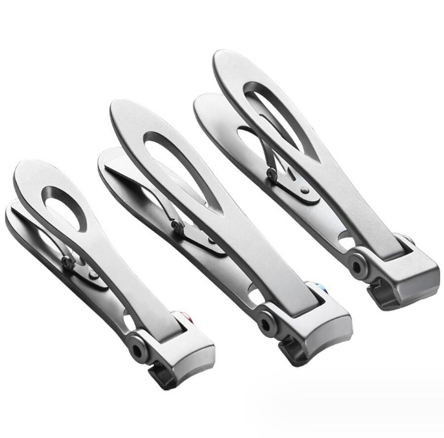
What’s 4116 stainless steel?
4116 stainless steel, full name DIN 1.4116, is a German standard martensitic stainless steel, that belongs to the manufacturing raw material for cutting...
Use these posts as the first content pool for material grade pages, processing guides, and sourcing articles.
Grade guides, UNS/EN references and buyer comparisons for stainless steel sourcing.

4116 stainless steel, full name DIN 1.4116, is a German standard martensitic stainless steel, that belongs to the manufacturing raw material for cutting...

As a stainless steel that can adjust material properties through heat treatment, martensitic stainless steel is a hardenable stainless steel. The charac...
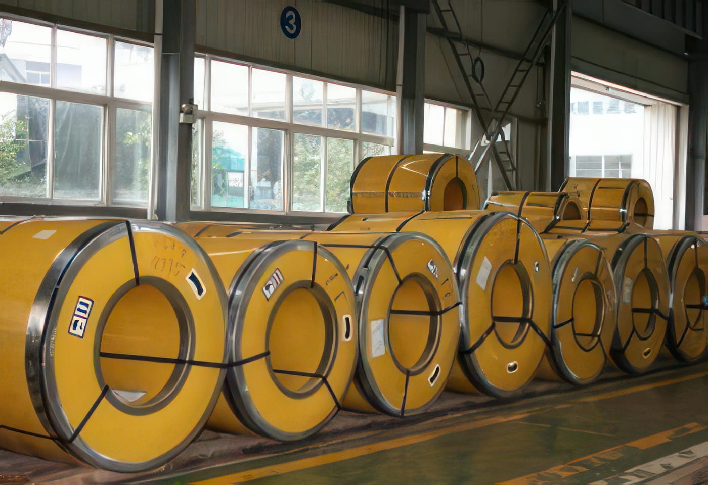
Packaging for Stainless Steel Strip Many times my cliets tell me they want SS201 material for their products, but they seldom mention about which detial...
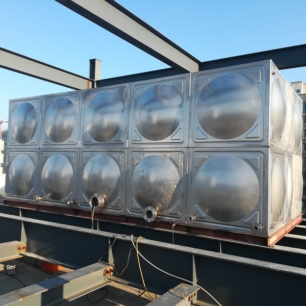
AISI 304 Stainless Steel (UNS S30400, SS 304) AISI 304 stainless steel (UNS S30400) is the most widely used stainless steel, containing 18-20% Cr and 8-...
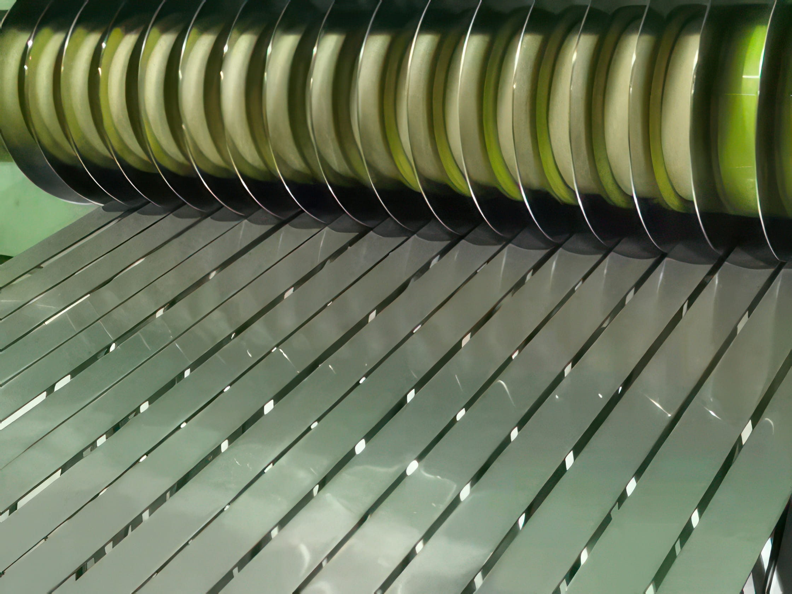
Stainless steel is a versatile material that is commonly used in various industries, from household items to industrial equipment. However, choosing the...
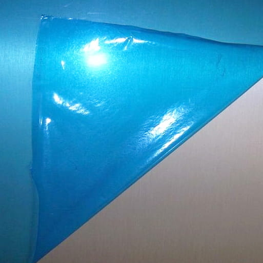
Stainless steel is prone to contamination and scratches during processing, which can compromise its surface integrity. To counteract this, a protective...
Practical fabrication knowledge for welding, forming and production control.
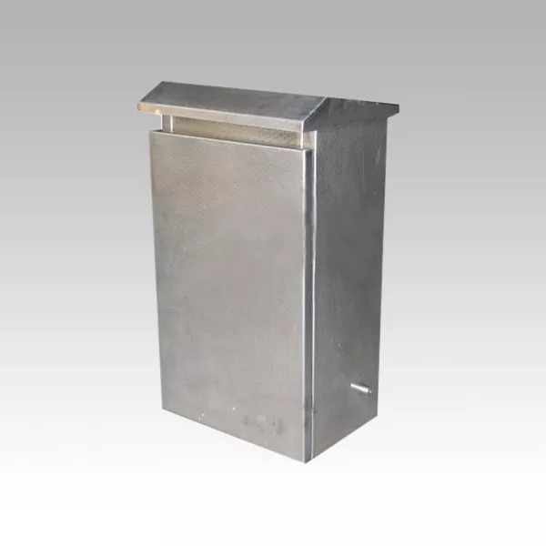
Welding Deformation is a very common defect in production.Let's figure out how to control welding deformation: Selecting a reasonable welding seam size:...
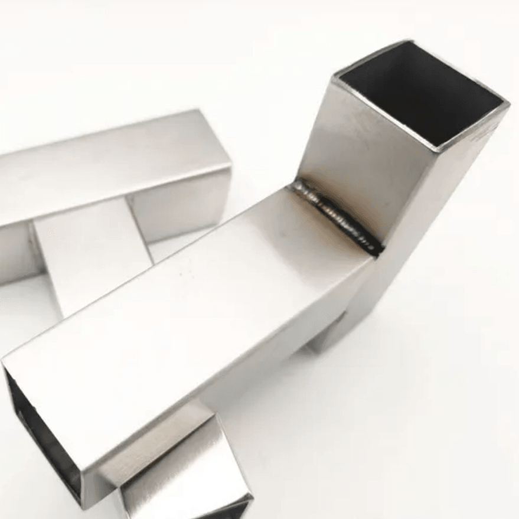
Fish scale welding is a welding process named for its fish scale-shaped welded surface. The process involves selecting a welding point, energizing it, s...
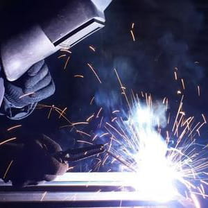
Argon arc welding is a common welding method that uses an electric arc protected by argon gas to weld two metal parts together. Under the protection of...
Import sourcing, Chinese stainless steel market notes and supply-chain context.
Today, upon customer invitation, I visited the 16th (2023) International Photovoltaic Power Generation and Smart Energy Conference. Having been in the i...
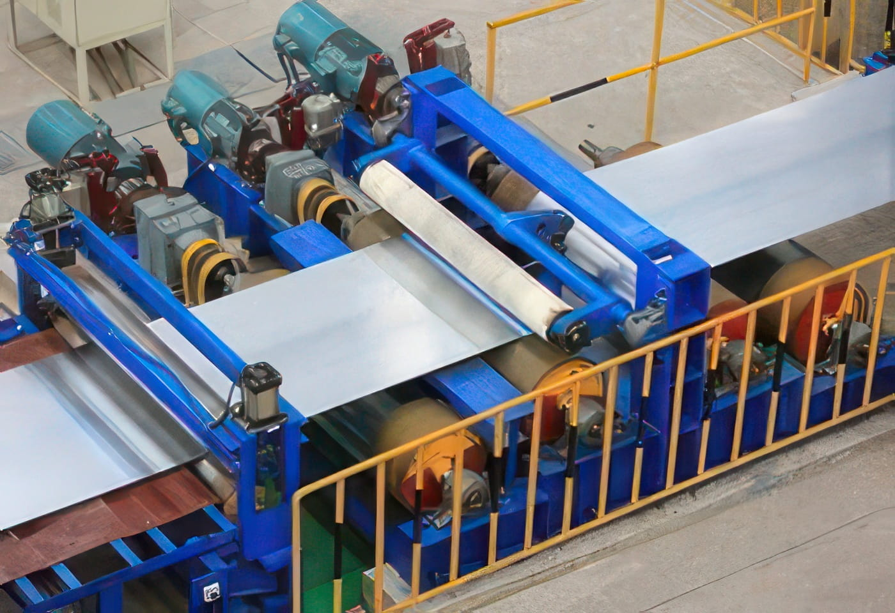
Importing stainless steel from China can be beneficial for a number of reasons. Surely, we won't say because we are exporting stainless steel from China...
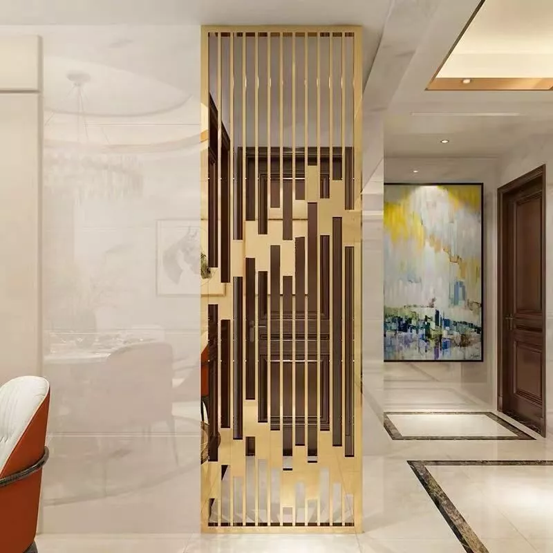
stainless steel partition walls are becoming increasingly popular in modern interior design due to their durability, aesthetic appeal, and versatility....
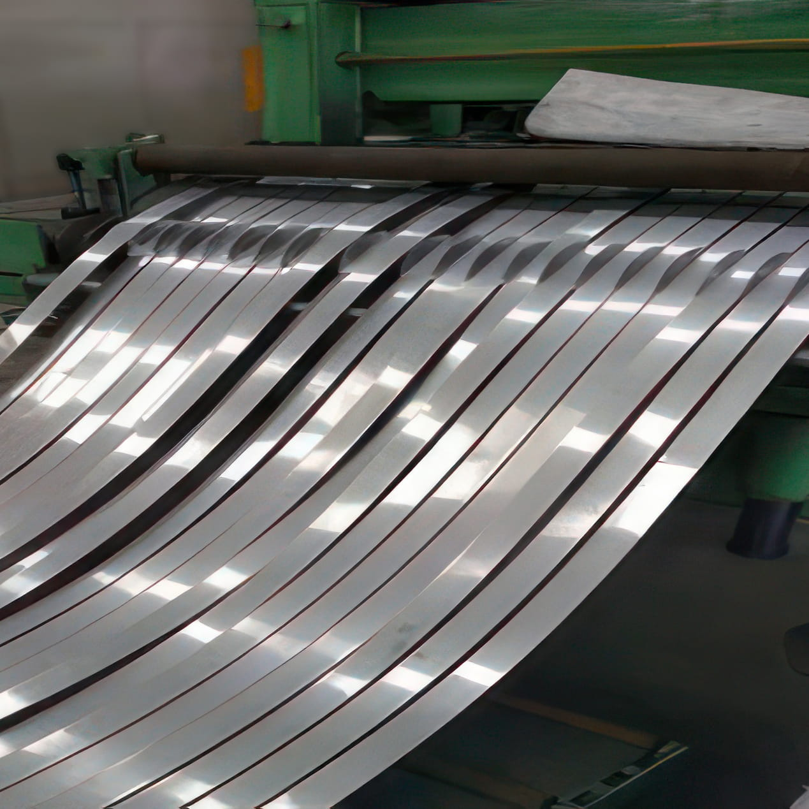
China is the largest producer and consumer of stainless steel in the world, accounting for over 50% of global production and consumption. The Chinese st...
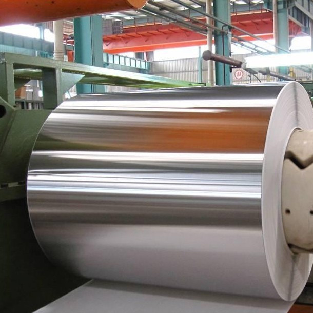
Importing stainless steel from China can be beneficial for a number of reasons. Here are some of the main reasons why people might choose to import stai...
Workshop notes and process details that can become stronger SEO posts later.

Common Bending Dies Common bending dies are shown as below. In order to prolong the life of the dies, rounded corners should be used in part design when...
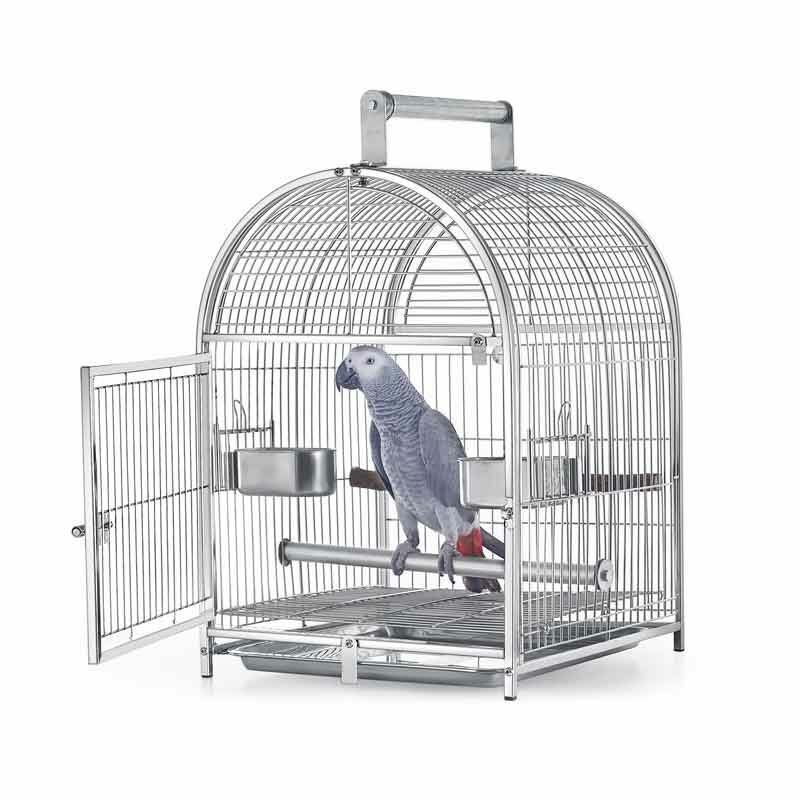
The primary use of zinc is to coat iron or steel in a process called galvanization to prevent rust. Zinc protects steel and iron from rusting it also di...